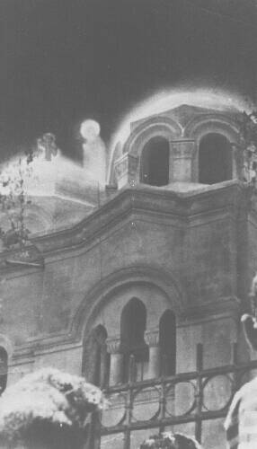

Our Lady of Zeitoun
Zeitoun, Cairo, Egypt, 1968 to 1971

Beginning on April 2, 1968, crowds reported luminous figures of the Virgin Mary over Saint Mary's Coptic Church, first seen by two Muslim bus mechanics. The apparitions recurred for about three years. Pope Kyrillos VI confirmed them, police could find no explanation, and crowds of up to 250,000 were reported. Skeptics, including Joe Nickell, point to crowd psychology, and an anthropologist who visited saw only "intermittent flashes of light." 1
Open in the interactive Watcher
Sources
- Our Lady of Zeitoun Wikipedia